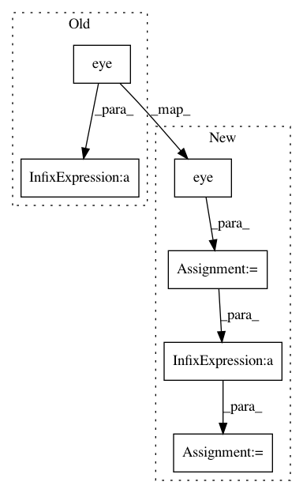

66d1f94d4fa423b007b8653a833cf85ea6018880,geomstats/stiefel.py,Stiefel,belongs,#Stiefel#Any#Any#,38
Before Change
return gs.array([[False]] * n_points)
point_transpose = gs.transpose(point, axes=(0, 2, 1))
diff = gs.matmul(point_transpose, point) - gs.eye(p)
diff_norm = gs.linalg.norm(diff, axis=(1, 2))
belongs = gs.less_equal(diff_norm, tolerance)
After Change
return gs.array([[False]] * n_points)
point_transpose = gs.transpose(point, axes=(0, 2, 1))
identity = gs.to_ndarray(gs.eye(p), to_ndim=3)
identity = gs.tile(identity, (n_points, 1, 1))
diff = gs.einsum("nij,njk->nik", point_transpose, point) - identity
diff_norm = gs.linalg.norm(diff, axis=(1, 2))
belongs = gs.less_equal(diff_norm, tolerance)
In pattern: SUPERPATTERN
Frequency: 3
Non-data size: 6
Instances
Project Name: geomstats/geomstats
Commit Name: 66d1f94d4fa423b007b8653a833cf85ea6018880
Time: 2018-12-26
Author: ninamio78@gmail.com
File Name: geomstats/stiefel.py
Class Name: Stiefel
Method Name: belongs
Project Name: iskandr/fancyimpute
Commit Name: 8258fee853de65a2de64b756a8d0a10799035ad5
Time: 2016-01-10
Author: sergeyfeldman@gmail.com
File Name: fancyimpute/bayesian_ridge_regression.py
Class Name: BayesianRidgeRegression
Method Name: fit
Project Name: cornellius-gp/gpytorch
Commit Name: b9b52c4b3b532f4a3d4c7f54206b241d9731f2d0
Time: 2019-10-24
Author: darbour26@gmail.com
File Name: gpytorch/kernels/index_kernel.py
Class Name: IndexKernel
Method Name: _eval_covar_matrix